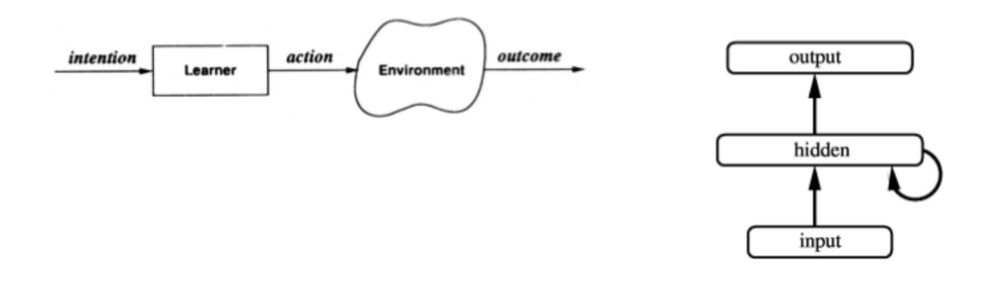
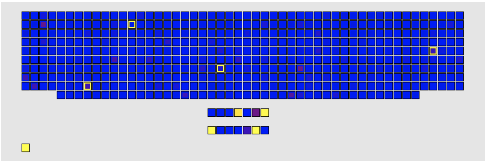
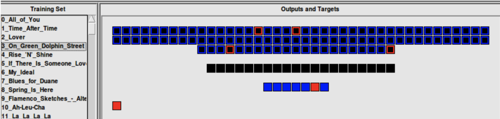

Playlist Generation using LENS
As a student at Carnegie Mellon University, I enjoyed the opportunity to learn from and work with David Plaut, Professor of Pyschology with a joint appointment in the Carnegie Mellon Neuroscience Insitute, and the head of the Plaut Lab at CMU. Lens, a neural network simulator, was created by a CMU graduate student and is also used at the MIT tedlab. For my research, I use LENS, short for Light Efficient Network Simulator, to create a neural network that generates a playlist of songs, based off input of one song and influenced by a user's musical taste.
My Motivation for this research is inspired by industry dominant music providers Spotify, Apple Music, and Pandora, who offer playlists of 'new' music personalized to each user. In order to do this, companies like Spotify use much more data than I have access to, such as the preferences of millions of users. For this research, I created a dataset of close to 500 songs to represent my musical taste. Each song is broken down into seven numerical metrics, creating a fingerprint for each song, and tested on a Feed-Forward and Recurrent Neural Networks.
In Lens, I begin by training the feed forward network on 490 songs. In this simulation, the network takes in a song in the form of its seven song features, where each feature has been normalized to its respective z-score. The features are then fed into a hidden layer of seven units, and into an output of 490 songs. The desired goal is the highly activated outputs of an input song would result in a playlist influenced by the chosen song as well as the user's preferences (in this paper, my preferences). This network, even with numerous variations in weight decay and training periods, did not produce many insightful results. The most useful result is the below image, where song number 488 "Countdown" showed unique activations, where each highlighted square is an active output, and the darker squares show less activation. The lone bright square in the bottom left shows an activation of 1.0, and is "Countdown" the input.
Overall, the feed forward network did not generalize well from dataset, and was not useful in creating a playlist for any given song input. The goal of any network in LENS, for this project, is to generate a new playlist based on my preferences in the form of the dataset, and a song in the form of the input (where the input is seven feature values). All this stays true in the recurrent networks training, but with 20 hidden units and 100 output units. The output was reduced by 390 units for computational feasibility. In a recurrent network, there is cross-talk between units in the hidden, which often allows the hidden to better generalize capture greater insights in the neural network. Contradictory to my intuition, the recurrent network performs very poorly, and catpures even less than the feed forward network. As it turns out, the cross-talk only worked to muddle any noticeable preference generations, even after 2000 epochs.
Overall, the feed forward network's results can be used to generate playlists. In order to get results, the dataset should be increased into the thousands, and other types of data be introduced. Other types of data that would help this research would be metadata for many users, as well as a natural language processing of songs and more rigorous audio processing. For more detail, the full research paper is public, and accessible below.
My Motivation for this research is inspired by industry dominant music providers Spotify, Apple Music, and Pandora, who offer playlists of 'new' music personalized to each user. In order to do this, companies like Spotify use much more data than I have access to, such as the preferences of millions of users. For this research, I created a dataset of close to 500 songs to represent my musical taste. Each song is broken down into seven numerical metrics, creating a fingerprint for each song, and tested on a Feed-Forward and Recurrent Neural Networks.
Depiction of Feed Forward Network Depiction of Recurrent Network
In Lens, I begin by training the feed forward network on 490 songs. In this simulation, the network takes in a song in the form of its seven song features, where each feature has been normalized to its respective z-score. The features are then fed into a hidden layer of seven units, and into an output of 490 songs. The desired goal is the highly activated outputs of an input song would result in a playlist influenced by the chosen song as well as the user's preferences (in this paper, my preferences). This network, even with numerous variations in weight decay and training periods, did not produce many insightful results. The most useful result is the below image, where song number 488 "Countdown" showed unique activations, where each highlighted square is an active output, and the darker squares show less activation. The lone bright square in the bottom left shows an activation of 1.0, and is "Countdown" the input.
Song Number 488 "Countdown" after 320 epochs in a Feed Forward Network in LENS
Overall, the feed forward network did not generalize well from dataset, and was not useful in creating a playlist for any given song input. The goal of any network in LENS, for this project, is to generate a new playlist based on my preferences in the form of the dataset, and a song in the form of the input (where the input is seven feature values). All this stays true in the recurrent networks training, but with 20 hidden units and 100 output units. The output was reduced by 390 units for computational feasibility. In a recurrent network, there is cross-talk between units in the hidden, which often allows the hidden to better generalize capture greater insights in the neural network. Contradictory to my intuition, the recurrent network performs very poorly, and catpures even less than the feed forward network. As it turns out, the cross-talk only worked to muddle any noticeable preference generations, even after 2000 epochs.
Song Number 3 "On Dolphin Street" after 2000 epochs in a Recurrent Network in LENS
Overall, the feed forward network's results can be used to generate playlists. In order to get results, the dataset should be increased into the thousands, and other types of data be introduced. Other types of data that would help this research would be metadata for many users, as well as a natural language processing of songs and more rigorous audio processing. For more detail, the full research paper is public, and accessible below.